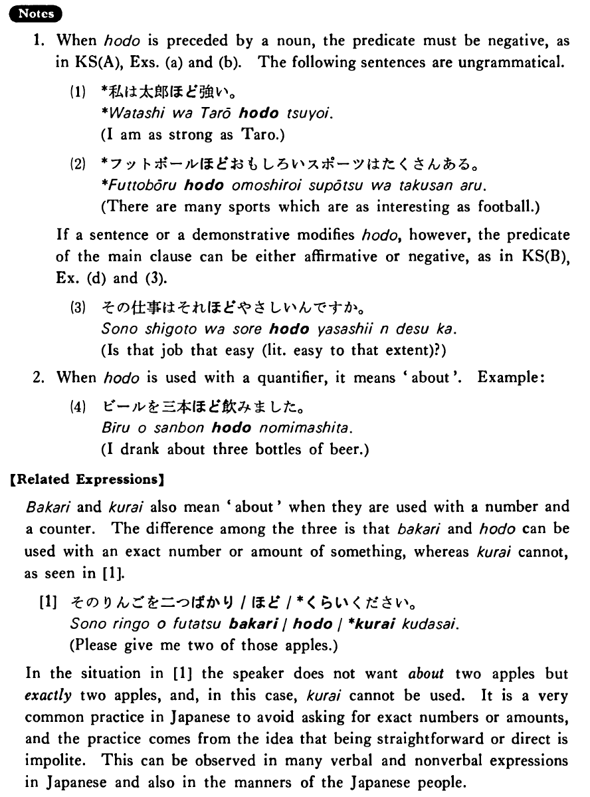

←
DoJG
→
ほど
(B. 135)
Example sentences
(ksa).
私はケン
ほど
強くない・強くありません。
I'm not as strong as Ken.
(ksb).
この仕事は子共でも出来る
ほど
易しい・易しいです。
This job is so easy that even a child can do it.
(a).
僕は君
ほど
速く歩けません。
I can't walk as fast as you can.
(b).
ジェニファー
ほど
よく勉強する学生はいない。
There is no student who studies as hard as Jennifer.
(c).
私は西田さんがあれ
ほど
ピアノが弾けるとは思わなかった。
I didn't think that Mr. Nishida could play the piano that well.
(d).
ルイスさんの日本語は太田先生も外国人だと気づかなかった
ほど
上手です。
Mr. Lewis' Japanese is so good that even Professor Ota didn't notice he was a foreigner.
Formation
(i)
Noun
ほど
君
ほど
As you
(ii)
Demonstrative
ほど
それ
ほど
To that extent
(iii)
Sinformal
ほど
家が倒れる
ほど
To the extent that houses would fall down
